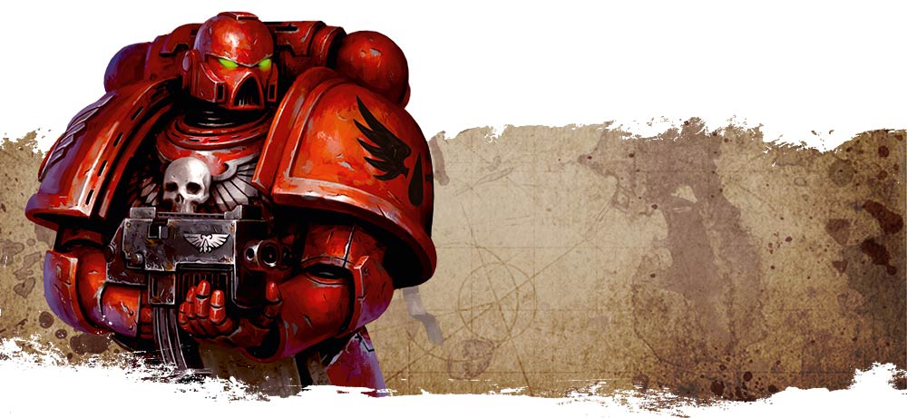

Blood Angel strike force 'Wings of the Archangel'
Inquisitorial Detatchment
Epsilon Delta
Astra Militarum
--REDACTED-- Regiment
Blood Angel Strike Force
'Wings of the Archangel'
Blood Angels Strike Force Command
Blood Angels Infantry Squads
Blood Angels Armory
Blood Angels Auxiliary Support